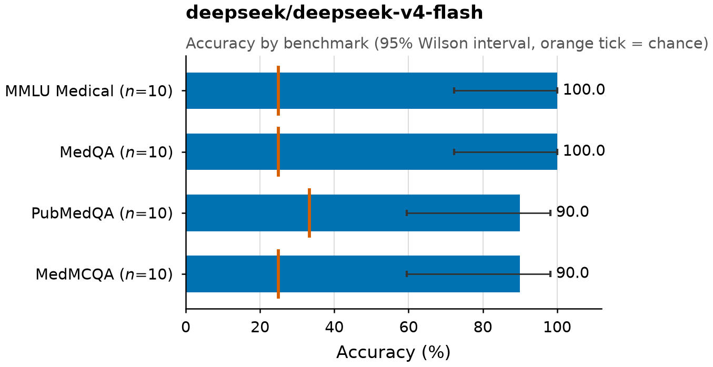
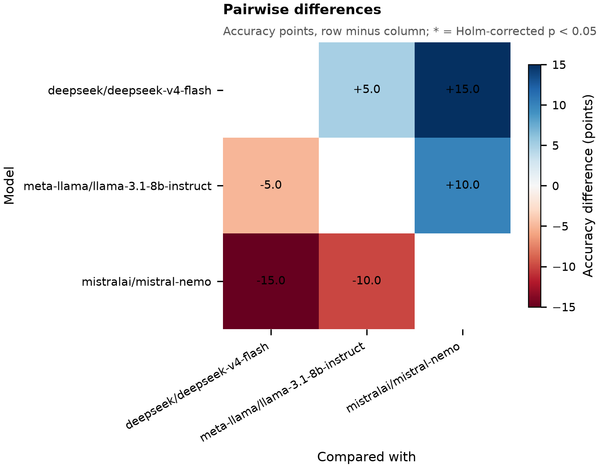

Quickstart
You need Python 3.10 or newer and an OpenRouter key. Any text model on OpenRouter can be used. If a request fails, the error is saved with that question.
-
Install
git clone https://github.com/Layered-Labs/benchbase-med cd benchbase-med pip install -e . -
Add your key
export OPENROUTER_API_KEY=sk-or-v1-...Or put the same line in a
.envfile in the folder you run from, or in~/.config/benchbase/.envto use it from anywhere. BenchBase never writes your key anywhere. -
Run a model
benchbase run --model deepseek/deepseek-v4-flash --limit 10BenchBase streams the questions from Hugging Face. Each answer is saved as soon as it comes back. If you stop the run, run the same command again to continue.
Run benchbase doctor any time to see which keys are set and which benchmarks are available.
What you get
Every run writes plain files: Markdown, PNG images, CSV and JSON. You can open them anywhere, and they display on GitHub.
results/deepseek__deepseek-v4-flash/ report.md the tables and charts on one page figures/ the charts, as 300 dpi PNG images with titles responses.jsonl every question and answer, one line each results.csv one row per question metrics.csv one row per benchmark summary.json all the numbers in one file
This is the table from report.md for a real run with 10 questions per benchmark.
| Benchmark | n | Accuracy (95% CI) | Random guess |
|---|---|---|---|
| MedMCQA | 10 | 90.0% (59.6 to 98.2) | 25.0% |
| MedQA | 10 | 100.0% (72.2 to 100.0) | 25.0% |
| MMLU Medical | 10 | 100.0% (72.2 to 100.0) | 25.0% |
| PubMedQA | 10 | 90.0% (59.6 to 98.2) | 33.3% |

The report also shows balanced accuracy, macro F1, the share of invalid answers, tokens, and cost.
Compare models
List several models separated by commas. BenchBase runs each one, then compares them on the same questions.
benchbase run --model deepseek/deepseek-v4-flash,meta-llama/llama-3.1-8b-instruct,mistralai/mistral-nemo --limit 10Two accuracy numbers side by side are not enough to say one model is better, because both models face the same hard questions. BenchBase compares them only on the questions where they gave different answers. This is McNemar's test, and the result is in results/compare/comparison.md.
| Model A | Model B | Difference, points (95% CI) | A only | B only | p (Holm) |
|---|---|---|---|---|---|
| deepseek-v4-flash | llama-3.1-8b-instruct | +5.0 (-5.0 to +15.0) | 3 | 1 | 0.625 |
| deepseek-v4-flash | mistral-nemo | +15.0 (+5.0 to +27.5) | 6 | 0 | 0.094 |
| llama-3.1-8b-instruct | mistral-nemo | +10.0 (-2.5 to +22.5) | 5 | 1 | 0.438 |
A only is the number of questions A got right and B got wrong. Only these questions can tell two models apart. The p-values are corrected for comparing every pair of models (Holm). With only 40 questions, no pair is significantly different after correction. That does not mean the models are equal: the sample is too small to tell.

The report also shows Cohen's kappa (how often two models are right or wrong together, beyond chance), oracle accuracy (the share of questions that at least one model got right), and a breakdown per benchmark. Across these three models, 80.0% of questions were answered correctly by all three, none by all wrong, and 20.0% by some but not all. If you always picked a correct model, you would reach 100.0%. On 92.5% of questions, more than half of the models were right.
Small samples prove little. These numbers use 10 questions per benchmark to keep the demo quick, and a p-value does not tell you how much a difference matters. A full run does not by itself give a result you can publish either. For a result you would cite, decide on held-out data, choose and report the splits, check for contamination, and report the uncertainty.
Test your own system
BenchBase can score anything that speaks the OpenAI chat completions API: vLLM, Ollama, LM Studio, or a service you wrote, such as an ensemble, a retrieval pipeline or an agent. Set the base URL.
benchbase run --model my-system --base-url http://localhost:8000/v1--model is a label. BenchBase sends it as the model name and uses it to name the results folder. If your API needs a key, put it in an environment variable or a .env file and pass --api-key-env MY_SYSTEM_KEY. No OpenRouter key is needed.
Your service gets the same prompt as every model. It must reply with only the option key, for example B. Anything else is scored wrong. If your service does not report usage or cost, those fields are left empty.
The results go in the results folder next to the models', so you can compare your system with any model:
benchbase compare results/my-system results/deepseek__deepseek-v4-flashHow scoring works
A benchmark score depends on the prompt and on how the answer is read. Change either one and the accuracy changes. BenchBase fixes both, so scores from different models can be compared.
- Every model gets the same zero-shot prompt (no examples). Temperature 0 is requested on every call; a model that does not accept a temperature ignores it and uses its own default. The prompt has a version label, currently
mcq-zeroshot-v2, that is saved with every result. A person changes the label when the prompt changes. - The model must reply with only the key of the option it chose, for example
B. BenchBase trims the reply and checks that it is exactly one of the question's option keys. It does not extract or repair anything: any other reply counts as no answer and is scored wrong. There is no structured-output request, no confidence score and no regex. - BenchBase refuses to continue a results file that was written by a different model or prompt version. Because the prompt version is a label changed by hand, a prompt edit made without changing the label is not caught.
BenchBase works out the outcome of each reply from the saved record. results.csv has a status column with these values:
| status | Meaning |
|---|---|
ok | A valid answer: the reply was exactly one of the option keys |
invalid | No answer: the reply was something other than an option key. Scored wrong |
truncated | The model ran out of tokens before answering, often after long hidden reasoning. Scored wrong |
request_error | The request failed after retries. Left out of accuracy, and retried when you rerun |
The metrics
- Accuracy with a 95% Wilson interval, and the random-guess score: what you would get by guessing, given each question's number of options.
- Balanced accuracy and macro F1 are worked out per correct answer key, so a model that always gives the same answer on a lopsided dataset is not rewarded.
- Macro accuracy is the headline number. Each benchmark counts equally, so the size of MedMCQA does not outweigh PubMedQA.
Every answer is saved
Each line of responses.jsonl holds one question: the model, the prompt version, the question and options, the model's exact reply, how it was scored, and the cost when the provider reports it. You can check any single result without reading the rest of the file. A real line, shortened:
{
"model": "deepseek/deepseek-v4-flash",
"prompt_version": "mcq-zeroshot-v2",
"dataset_key": "pubmedqa",
"split": "train",
"hash": "2d7b79c2cd1f…",
"question": "Does ethnicity affect where people with canc…",
"options": [{"original_key": "A", "text": "Yes"}, {"original_key": "B", "text": "No"}, {"original_key": "C", "text": "Maybe"}],
"gold": "A",
"pred": "A",
"correct": true,
"raw_output": "A",
"finish_reason": "stop",
"latency_ms": 3246.7,
"prompt_tokens": 593,
"completion_tokens": 154,
"cost": 0.00014285
}The hash is computed from the question text and the answer text, so it does not change if the options are shuffled or relabeled. It is not unique: different sets of options can produce the same hash. BenchBase also stores an item_id that includes the option text. To join or deduplicate results, use dataset_key, split and item_id together, not hash alone.
Benchmarks
BenchBase scores every labeled split by default (train, validation, dev or test, whichever exist), and each result records its split. The overall score is therefore not a held-out test score. For a held-out result, filter responses.jsonl to the test split and recompute. Datasets are on Hugging Face under Layered-Labs. The item counts are what the current code produces. The MedQA and MedMCQA copies there were uploaded earlier with older code and have not been checked against these counts.
| Benchmark | Items converted | Splits | Notes |
|---|---|---|---|
| MedQA | 11,451 | train, test | USMLE-style, 4 options |
| MedMCQA | 187,005 | train, validation | Indian medical entrance exams. The source's test split has no public answers, so it is skipped |
| PubMedQA | 1,000 | train | Yes, No or Maybe, shown as options A, B and C. The abstract is included as context |
| MMLU Medical | 1,242 | test, validation, dev | Anatomy, clinical knowledge, college medicine, medical genetics, professional medicine and college biology |
Every benchmark is converted into the same format. A row is rejected and logged to rejected.json if it has an empty option, an answer that matches no option, duplicate option keys, or fewer than two options. Rejected rows are never scored.
BenchmarkItem(
dataset_key = "medqa",
hash = "SHA256(question + answer text)",
split = "train",
question_type = "mcq",
question = "A 45-year-old man presents with...",
context = None, # a passage, if the question has one
options = [{"original_key": "A", "text": "..."}, ...],
answer = {"original_key": "D", "text": "Nitrofurantoin"},
metadata = {...}, # source fields that do not fit the schema
)Add a benchmark
A new benchmark takes one converter and one registry entry. The converter maps the source's fields onto the format. BenchBase handles the rest: splits, validation, logging rejected rows, and publishing. Work from a clone (pip install -e .).
class MedQAConverter(BenchBaseConverter):
def make_question(self, raw):
return raw["question"]
def make_options(self, raw):
return [Option(original_key=label, text=text)
for label, text in sorted(raw["options"].items())]
def make_answer(self, raw, options):
return Option(original_key=raw["answer_idx"], text=raw["answer"])
def make_metadata(self, raw):
return {"metamap_phrases": list(raw.get("metamap_phrases") or [])}Then add it to benchbase/released.yaml:
- key: medqa
title: MedQA
converter: benchbase.converters.medqa.MedQAConverter
source: GBaker/MedQA-USMLE-4-options
license: cc-by-4.0benchbase check medqa converts a small live sample of the source and checks it. When you open a pull request, CI runs the same check on every registered converter. When it is merged, every entry that has a license is published to Layered-Labs/benchbase-<key> on Hugging Face, and the repo is created if it does not exist. Entries without a license are never published.
CLI reference
| Command | What it does |
|---|---|
benchbase doctor | Shows which keys are set and which benchmarks are on Hugging Face |
benchbase list | Lists the registered benchmarks |
benchbase run --model M | Runs one model, or several separated by commas. Writes the report, and the comparison when there are several |
benchbase report DIR | Rebuilds metrics, figures, and report.md from an existing responses.jsonl |
benchbase compare DIR... | Compares run folders: accuracy and the paired McNemar analysis |
benchbase convert KEYS | Converts the source datasets to the BenchBase format in ./unified_datasets, with a rejected.json for each |
benchbase check KEYS | Checks converters against a small live sample of the source |
benchbase publish KEYS | Publishes converted datasets to Hugging Face (needs a write token) |
Flags for run
| Flag | Default | Meaning |
|---|---|---|
--datasets | all | Comma-separated keys |
--limit | all | How many questions to run per benchmark, chosen at random using the seed. By default every question in every split is run, not only the test split |
--seed | 0 | Seed for the random sample. Runs with the same seed and limit get the same questions |
--workers | 8 | Concurrent requests |
--max-tokens | 8192 | Most tokens a model may use per answer |
--base-url | OpenRouter | Score your own OpenAI-compatible API instead of OpenRouter. --model becomes the label |
--api-key-env | none | Name of the variable holding that API's key, if it needs one |
--no-titles | off | Charts without titles, for journals that want the caption in the paper (also works on report and compare) |
--fresh | off | Delete earlier responses instead of continuing them |
--out | results/<model> | Folder for the results (one model only) |
Limits
Is a high score clinical validation?
No. The questions come from exams and research papers. A high score means a model knows the material. It does not show that the model is safe to use with patients.
Can I trust a small run?
Not for conclusions. On 10 questions a 95% interval is very wide, and McNemar's test needs questions where the models disagree. Use small runs to check that your setup works. A full run includes training data, so it is not a held-out score either. To publish a result you need held-out data, a chosen split, contamination checks, and reported uncertainty.
Why are some answers marked truncated?
Some models spend their whole token budget thinking and return nothing. Those answers are scored wrong and counted as invalid. If that share is high, raise --max-tokens.
Which tasks are supported?
Only text multiple choice. Images and free-response questions need an image field and a fixed way to judge answers first.